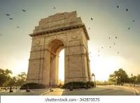
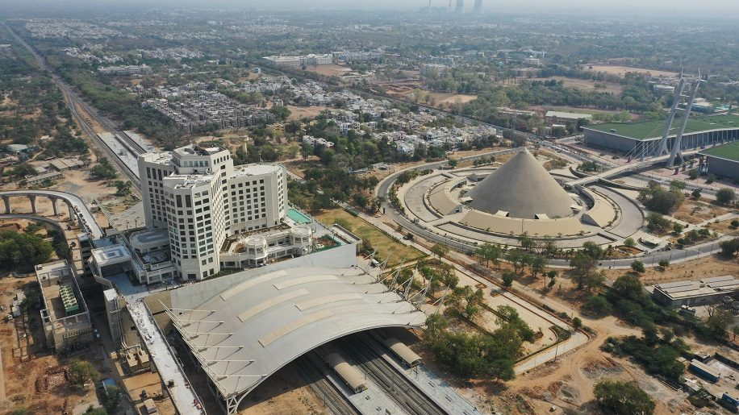
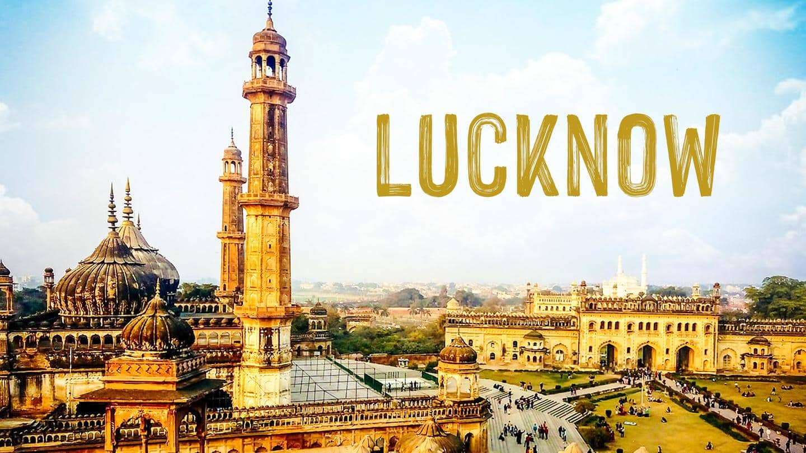

- delhi
-
- new delhi
New Delhi is jointly administered by the federal government of India and the local government of Delhi, and serves as the capital of the nation as well as the NCT of Delhi.Delhi is also the centre of the National Capital Region, which is an "interstate regional planning" area created in 1985.
 - new delhi
-
- haryana
-
- chandigarh
Chandigarh derives its name from the temple of "Chandi Mandir" located in the vicinity of the site selected for the city. The deity 'Chandi', the goddess of power and a fort of 'garh' laying beyond the temple gave the city its name "Chandigarh-The City Beautiful".

- gujarat
-
- gandhinagar
The city sits on the banks of the Sabarmati River, in north-central-east Gujarat. The 20,543 km2 area around Gandhinagar is defined by Gujarat capital territory. Gandhinagar spans an area of 326 km2 (126 sq mi). The river frequently dries up in the summer, leaving only a small stream of water.

-
- rajasthan
-
- jaipur
Jaipur became known as “The Pink City” when, in 1876, Maharaja Ram Singh had most of the buildings painted pink—the color of hospitality—in preparation for a visit by Britain's Queen Victoria. Today, the city is known for its bazaars, forts, temples, palaces, and wildlife sanctuaries.

-
- maharashtra
-
- mumbai
Mumbai is the financial capital and the most populous city of India with an estimated population of 12.5 million (1.25 crore). Mumbai is the centre of the Mumbai Metropolitan Region, the sixth-most populous metropolitan area in the world with a population of over 23 million (2.3 crore).

-
- uttarpradesh
-
- lucknow
It is the eleventh most populous city and the twelfth most populous urban agglomeration of India. Lucknow has always been known as a multicultural city that flourished as a North Indian cultural and artistic hub, and the seat of power of Nawabs in the 18th and 19th centuries.
